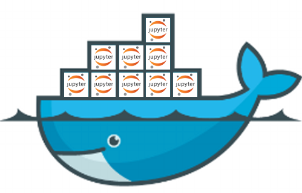
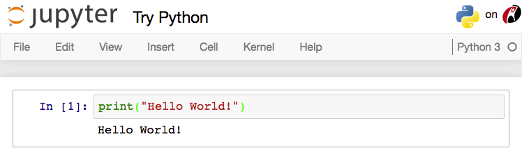
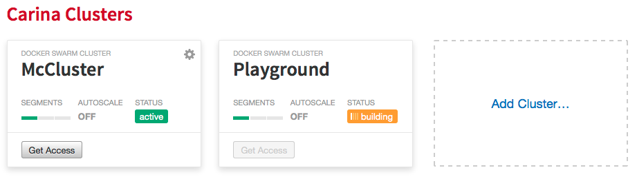
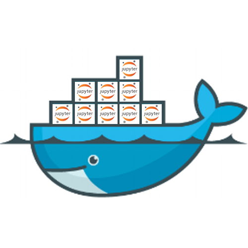

JupyterHub and Carina
The Ultimate Learning Environment

Carolyn Van Slyck
RACKIN & STACKIN
Jupyter
Interactive online programming environment
Docker
- Docker = Container Black Magic Voodoo
- Docker Image = A packaged application
- Minimal operating system, e.g. ubuntu
- Source code
- Dependencies
- Docker Container = An instance of an image
docker run jupyter/notebookCarina
Docker as a Service
How to Whale
Bring Your Own Compute
- Workshops
- Demos
- Sharing Research
Origin Story

@BetaTim
@CaptainSafia
Under the Hood
Running JupyterHub on Carina
- Signup: getcarina.com
- Register: oauth.getcarina.com
- Install Plugin:
pip install jupyterhub-carina - Configure Plugin:
c = get_config()
# Required: Configure JupyterHub to authenticate against Carina
c.JupyterHub.authenticator_class = "jupyterhub_carina.CarinaAuthenticator"
c.CarinaAuthenticator.admin_users = ["{carina_username}"]
c.CarinaAuthenticator.oauth_callback_url =
"https://{jupyterhub_domain}/jupyter/hub/oauth_callback"
# Required: Configure JupyterHub to spawn user servers on Carina
c.JupyterHub.hub_ip = "0.0.0.0"
c.JupyterHub.spawner_class = "jupyterhub_carina.CarinaSpawner"
c.CarinaSpawner.hub_ip_connect = "{jupyterhub_domain}"+
free compute
+
Jupyter
=
FUN
Resources
- JupyterHub Carina - github.com/jupyterhub/jupyterhub-carina
- Carina - getcarina.com
- Carina OAuth - oauth.getcarina.com
- Project Jupyter - jupyter.org
- Jupyter Demo - try.jupyter.org
- How to Whale - howtowhale.com